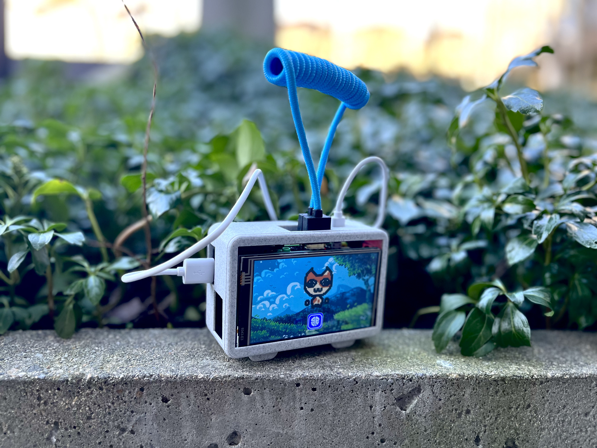

Introduction and Context
The idea of ZenPet is conceived in response to the fast-paced, goal-driven, and comparison-based zeitgeist of the information age. Many people seem to always be on the move for the next best thing in life, leaving no room for retrospection and reflection. Social media platforms only exacerbate this issue by fostering comparison and superficiality. With ZenPet, I attempt to reorient people’s energy in the information from outward to inward, turning redundant outward expression into much-needed self-reflection, turning soul-consuming comparison into nourishing care.
Role
Product Lead
Main Designer
Team Size
3
Duration
12 Weeks
Time
Fall 2022
Tools Used
Unity
Cinema4D
Fusion360
Figma
3D Printing
Product Informtion
"ZenPet is a virtual companion that helps people live an intentional and reflective life."
ZenPetZero is the first iteration of product development by our team. It encapsulates the product’s core functionalities and design philosophy. ZenPetZero has two main components:
- The Game where the virtual pet lives and interacts with the user
- The device hardware that contains the game and creates emotion connects with the user physically
Product Video
Game Mechanism
The main mechanism of the game lies in the users’ interactions with a virtual pet. Through caring for the pet and developing a bond with the pet, the users perform reflection, achieve personal growth, and receive intimacy in return.
Hunger
- Fulfill the virtual pet’s hunger level by feeding them memorable experiences in the form of photos or sound bytes
- Be more aware of the beauty and excitement in the granular and ordinary
- Encourage capturing and documenting authentic moments for future retrospection
Sleep
- Lull the pet to sleep by telling them your deepest thoughts and newest ideas.
- Record thoughts and ideas with built-in microphone or document written entries with camera
- Build awareness of mind and emotions
- Document emphemeral thoughts in a convenient and customizable manner
Play
- The pet wants to play with you! It will give users tasks based on their mental states.
- The tasks are designed to inspire and guide the user to live a more balanced and healthy life
- Better lives and make great memories in an entertaining and purposeful way
Recap
- Periodically remind users to look back at their thoughts and experience on a given date
- three options: recapping today, recapping a random day, or picking a date to review
- Retrieve earlier ideas and realize personal change and growth.
Form Factor
For the casing design, we aim to bring life and cuteness to the physical product visually and foster nurturing emotional connection with the user. In addition, we want to develop ergonomic design features that makes the device interesting and alive on a tactile level.

Design Considerations
- Minimalist Base that resembles the virtual pet’s feet
- Coiled HDMI cord that resembles a tiny antenna
- Patterned finish on the back
Prior Works Research and Analysis
Prior Work #1: Journaling
Currently, the main tool for self-reflection is journaling. People who journal often write down their thoughts and feelings to better process and understand them. It is widely acclaimed as a practice that encourages mental health, personal development, and intentional living. Exploring ways to improve this current practice, I conducted interviews with five of my classmates.
Interview Insights
Theme 1: Jounraling is hard to maintain
“Though journaling is a great habit, is quite hard to maintain”
“I feel like I should journal more than I should”
“I always have this burst of energy to journal but it seems that I can never keep it up.”
Design Goal #1: Integrate self-reflection organically as an accessible and maintainable habit.
Theme 2: Journaling as Mental Health First-Aid
“Though journaling is a great habit, is quite hard to maintain”
“I feel like I should journal more than I should”
“I always have this burst of energy to journal but it seems that I can never keep it up.”
Design Goal #2: Expand the use of self-reflection beyond a stabilizer for extreme emotions. Encourgae users to actively practice refelction to live a better life.
Theme 3: Journaling is a Chore
“I don’t see myself journaling a lot in the future because it feels so much like a writing assignment, and I've done plenty of those”
“It’s just a lot of work”
“I really want to sit down, go deep in my thoughts, and write. But I just don’t have that time”
Design Goal #3: Make self-reflection a fun and rewarding experience.
Prior Work #2: Tamagotchi
To achieve the aforementioned goals, the idea was to elevate the reflective aspect of journaling with a fun mechanism or object. Tamagotchi is a digital pet developed by Bandai that took children all over the world by storm in the 1990s. People form deep emotional connections with the device for its cuteness and appeal to human nurture instincts.
However, our team reckons that under today’s technological context, there is a lot of room for innovation for the product to make the emotional connection deeper and more sincere.
- The current mechanism of fulfilling the pet’s need is achieved by only clicks of buttons or mini-games. A lot of emotional depth can be added to the process.
- The care element of the device is very rich. For our design, we will attempt to channel that energy of care toward the pet to the users themselves.
- Outside of the game mechanism, we will explore how form factors can be modified and augmented to catalyze the formation of deep emotional connections.
Competitors Analysis

These are all great apps that capture one or two areas of being fun, building organic habits, encouraging reflection, and forming emotional connections. However, none of them can achieve four areas altogether.
In addition, none of the apps aim to capture the more nuanced human experience and inner world, changing the way people view their experiences. We aim to fill that gap and create a product that captures all of the four aforementioned areas, which is novel in the market and greatly helpful to people’s spiritual lives.
Software and User Experience Design
User Flow and Wireframes
Character Design
Mood Board
Character Animations
Form Factor Design
Conceptualizing
First Iteration
In the first iteration of conceptualizing, we developed the form factor that aims to be friendly, cute, and smooth visually and tactilely.
- Inspired by pebbles that I used to play with as a kid, I employed mostly curvy and spherical elements.
- The dial is in place to evoke a sense of nostalgia and straightforward controls.
Second Iteration
In the second iteration, we were informed that with the current resources for prototyping, circular screens can be hard to achieve, which means our team has to work around that initial goal.
Also, we are attempting to express liveliness, cuteness, and intimacy in a more direct and interactive way. Thus, we decided to branch out and explore different paths the product’s form factor can go.
Concept 1: Modular Puppet
In the first iteration of conceptualizing, we developed the form factor that aims to be friendly, cute, and smooth visually and tactilely.
- Inspired by pebbles that I used to play with as a kid, I employed mostly curvy and spherical elements.
- The dial is in place to evoke a sense of nostalgia and straightforward controls.
Concept 2: Tree of Life
In the first iteration of conceptualizing, we developed the form factor that aims to be friendly, cute, and smooth visually and tactilely.
- Inspired by pebbles that I used to play with as a kid, I employed mostly curvy and spherical elements.
- The dial is in place to evoke a sense of nostalgia and straightforward controls.
Concept 3: Immersive Pet
In the first iteration of conceptualizing, we developed the form factor that aims to be friendly, cute, and smooth visually and tactilely.
- Inspired by pebbles that I used to play with as a kid, I employed mostly curvy and spherical elements.
- The dial is in place to evoke a sense of nostalgia and straightforward controls.
Case Implementation
After conceptualizing, our team dove into the prototyping process. At this point, We have to deal with real-life problems and make compromises. At this stage, we have to find ways to encase a Raspberry Pi 3, a power bank, and a 4-inch touch screen and organize various wires. Thus, we have to think realistically to work with our hardware. Though we made compromises due to time and hardware constraints, we retained our original design goal and philosophy.
What I Learned
- Being a great leader is not easy. In this project, being a product lead poses many exciting challenges for me. Though it is rocky at times, I learned to be a good leader that can set clear goals, think ahead, construct effective timelines, and hold the team accountable.
- In the product cycle, the things least expected will take the longest time. During the entire design process, we thought that major procedures like ideation, artwork, and game development would take the most time and energy. However, it was the nuanced things like getting the game running on the Pi and linking the camera to the device browser. I learned to not take these seemingly straightforward procedures lightly and develop better plans that take those into consideration.
- Successful product comes from pushing limits. this project, my team and I really pushed ourselves out of our comfort zone to achieve success. Personally, I learned game development on Unity, CAD on Fusion360, and compositing sprite animations. Exploring uncharted areas proves to be not only inevitable to create a successful product, but also exciting for me to grow my toolkit.